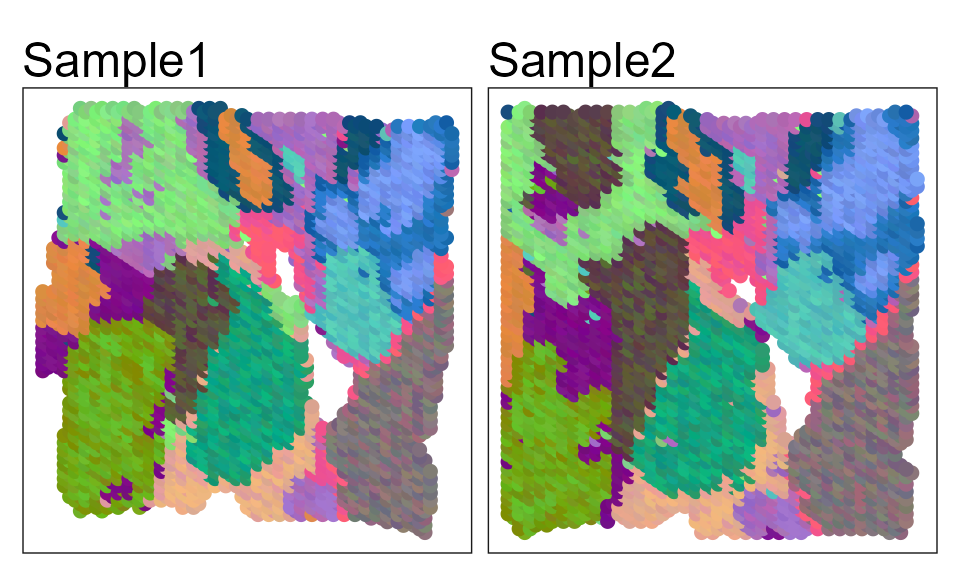
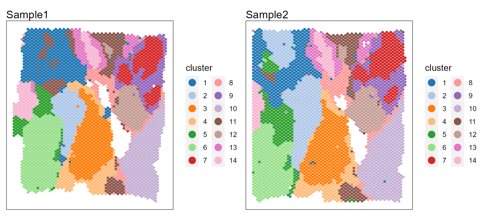
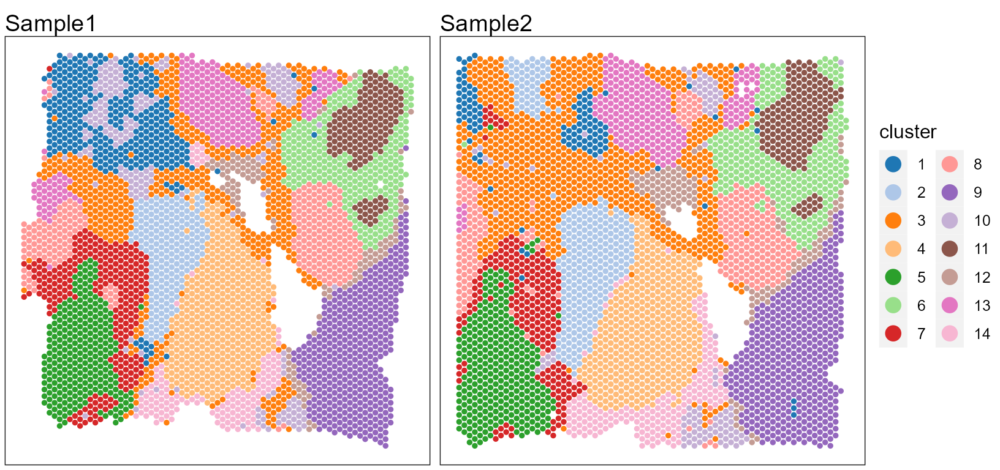
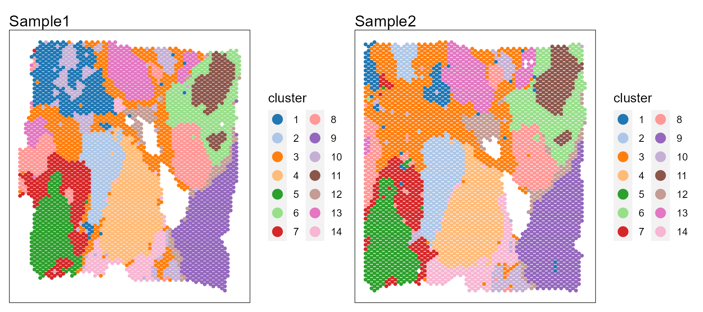
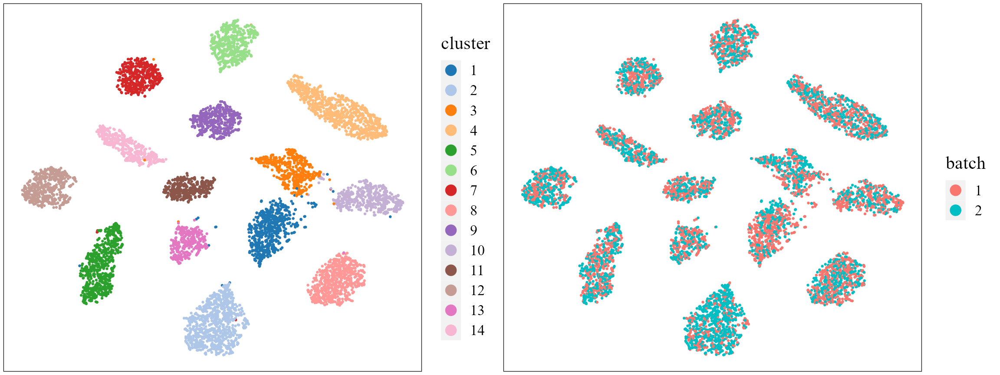
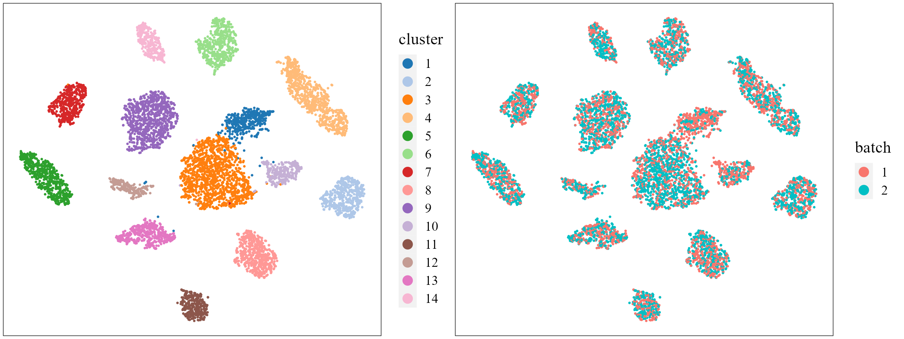

vignettes/PRECAST.BreastCancer.Rmd
PRECAST.BreastCancer.RmdThis vignette introduces the PRECAST workflow for the analysis of integrating multiple spatial transcriptomics datasets. The workflow consists of three steps
We demonstrate the use of PRECAST to two sliced human breast cancer Visium data that are here, which can be downloaded to the current working path by the following command:
githubURL <- "https://github.com/feiyoung/PRECAST/blob/main/vignettes_data/bc2.rda?raw=true"
download.file(githubURL, "bc2.rda", mode = "wb")Then load to R
load("bc2.rda")This data is also available at 10X genomics data website:
Users require the two folders for each dataset: spatial and filtered_feature_bc_matrix. Then the data can be read by the following commond.
library(DR.SC)
dir.file <- "Section" ## the folders Section1 and Section2, and each includes two folders spatial and filtered_feature_bc_matrix
seuList <- list()
for (r in 1:2) {
message("r = ", r)
seuList[[r]] <- read10XVisium(paste0(dir.file, r))
}
bc2 <- seuListThe package can be loaded with the command:
View human breast cancer Visium data from DataPRECAST
bc2 ## a list including two Seurat object
#> [[1]]
#> An object of class Seurat
#> 36601 features across 3798 samples within 1 assay
#> Active assay: RNA (36601 features, 0 variable features)
#>
#> [[2]]
#> An object of class Seurat
#> 36601 features across 3987 samples within 1 assay
#> Active assay: RNA (36601 features, 0 variable features)Check the content in bc2
head(bc2[[1]])
#> orig.ident nCount_RNA nFeature_RNA spot
#> CACGATTGGTCGTTAA-1 SeuratProject 6853 3026 CACGATTGGTCGTTAA-1
#> GGTTGTATCGTGAAAT-1 SeuratProject 8679 3646 GGTTGTATCGTGAAAT-1
#> TCTTATGGGTAGTACC-1 SeuratProject 5093 2449 TCTTATGGGTAGTACC-1
#> TACAAGCTGTTCACTG-1 SeuratProject 9432 3708 TACAAGCTGTTCACTG-1
#> GTATCTTGTTGCTCAC-1 SeuratProject 8610 3512 GTATCTTGTTGCTCAC-1
#> ATACCAGGTGAGCGAT-1 SeuratProject 9974 3901 ATACCAGGTGAGCGAT-1
#> CCTAAACAGGGTCCGT-1 SeuratProject 7232 3173 CCTAAACAGGGTCCGT-1
#> ATGGTGCTCAAAGCCA-1 SeuratProject 6025 2867 ATGGTGCTCAAAGCCA-1
#> CAAATGCGGAGTGTTC-1 SeuratProject 8822 3678 CAAATGCGGAGTGTTC-1
#> CGTGCCCGACATTTGT-1 SeuratProject 6364 2932 CGTGCCCGACATTTGT-1
#> in_tissue row col imagerow imagecol
#> CACGATTGGTCGTTAA-1 1 0 50 4046 10350
#> GGTTGTATCGTGAAAT-1 1 1 51 4284 10486
#> TCTTATGGGTAGTACC-1 1 0 52 4047 10623
#> TACAAGCTGTTCACTG-1 1 1 53 4285 10759
#> GTATCTTGTTGCTCAC-1 1 0 54 4047 10896
#> ATACCAGGTGAGCGAT-1 1 1 55 4285 11032
#> CCTAAACAGGGTCCGT-1 1 0 56 4048 11169
#> ATGGTGCTCAAAGCCA-1 1 1 57 4286 11305
#> CAAATGCGGAGTGTTC-1 1 0 58 4048 11442
#> CGTGCCCGACATTTGT-1 1 1 59 4286 11578We show how to create a PRECASTObject object step by step. First, we create a Seurat list object using the count matrix and meta data of each data batch. Although bc2 is a prepared Seurat list object, we re-create it to show the details of the Seurat list object.
## Get the gene-by-spot read count matrices
countList <- lapply(bc2, function(x) x[["RNA"]]@counts)
## Get the meta data of each spot for each data batch
metadataList <- lapply(bc2, function(x) x@meta.data)
## ensure the row.names of metadata in metaList are the same as that of colnames count matrix
## in countList
M <- length(countList)
for (r in 1:M) {
row.names(metadataList[[r]]) <- colnames(countList[[r]])
}
## Create the Seurat list object
seuList <- list()
for (r in 1:M) {
seuList[[r]] <- CreateSeuratObject(counts = countList[[r]], meta.data = metadataList[[r]], project = "BreastCancerPRECAST")
}
bc2 <- seuList
rm(seuList)Next, we use CreatePRECASTObject() to create a PRECASTObject based on the Seurat list object bc2. This function will do three things:
premin.features and premin.spots, respectively; the spots are retained in raw data (bc2) with at least premin.features number of nonzero-count features (genes), and the genes are retained in raw data (bc2) with at least premin.spots number of spots. To ease presentation, we denote the filtered Seurat list object as bc2_filter1.gene.number=2000) for each data batch using FindSVGs() function in DR.SC package for spatially variable genes or FindVariableFeatures() function in Seurat package for highly variable genes. Next, we prioritized genes based on the number of times they were selected as variable genes in all samples and chose the top 2,000 genes. Then denote the Seurat list object as bc2_filter2, where only 2,000 genes are retained.postmin.features and postmin.spots, respectively; the spots are retained with at least post.features nonzero counts across genes; the features (genes) are retained with at least postmin.spots number of nonzero-count spots. Usually, no genes are filltered because these genes are variable genes.If the argument customGenelist is not NULL, then this function only does (3) not (1) and (2). User can retain the raw seurat list object by setting rawData.preserve = TRUE.
## Create PRECASTObject.
set.seed(2022)
PRECASTObj <- CreatePRECASTObject(bc2, project = "BC2", gene.number = 2000, selectGenesMethod = "SPARK-X",
premin.spots = 20, premin.features = 20, postmin.spots = 1, postmin.features = 10)
## User can retain the raw seuList by the following commond. PRECASTObj <-
## CreatePRECASTObject(seuList, customGenelist=row.names(seuList[[1]]), rawData.preserve =
## TRUE)Add adjacency matrix list and parameter setting of PRECAST. More model setting parameters can be found in .
## check the number of genes/features after filtering step
PRECASTObj@seulist
#> [[1]]
#> An object of class Seurat
#> 2000 features across 3798 samples within 1 assay
#> Active assay: RNA (2000 features, 1699 variable features)
#>
#> [[2]]
#> An object of class Seurat
#> 2000 features across 3987 samples within 1 assay
#> Active assay: RNA (2000 features, 1572 variable features)
## seuList is null since the default value `rawData.preserve` is FALSE.
PRECASTObj@seuList
#> NULL
## Add adjacency matrix list for a PRECASTObj object to prepare for PRECAST model fitting.
PRECASTObj <- AddAdjList(PRECASTObj, platform = "Visium")
## Add a model setting in advance for a PRECASTObj object. verbose =TRUE helps outputing the
## information in the algorithm.
PRECASTObj <- AddParSetting(PRECASTObj, Sigma_equal = FALSE, verbose = TRUE, int.model = NULL)For function PRECAST, users can specify the number of clusters \(K\) or set K to be an integer vector by using modified BIC(MBIC) to determine \(K\). First, we try using user-specified number of clusters. For convenience, we give the selected number of clusters by MBIC (K=14).
### Given K
PRECASTObj <- PRECAST(PRECASTObj, K = 14)
#> fitting ...
#>
|
| | 0%
|
|===== | 7%
|
|========= | 13%
|
|============== | 20%
|
|=================== | 27%
|
|======================= | 33%
|
|============================ | 40%
|
|================================= | 47%
|
|===================================== | 53%
|
|========================================== | 60%
|
|=============================================== | 67%
|
|=================================================== | 73%
|
|======================================================== | 80%
|
|============================================================= | 87%
|
|================================================================= | 93%
|
|======================================================================| 100%
#> variable initialize finish!
#> predict Y and V!
#> Finish ICM step!
#> iter = 2, loglik= -538710.062500, dloglik=0.999749
#> predict Y and V!
#> diff Energy = 3.292397
#> diff Energy = 9.490676
#> Finish ICM step!
#> iter = 3, loglik= -493363.031250, dloglik=0.084177
#> predict Y and V!
#> diff Energy = 0.300287
#> diff Energy = 18.361187
#> Finish ICM step!
#> iter = 4, loglik= -474036.593750, dloglik=0.039173
#> predict Y and V!
#> diff Energy = 9.838594
#> diff Energy = 15.776691
#> Finish ICM step!
#> iter = 5, loglik= -463934.000000, dloglik=0.021312
#> predict Y and V!
#> diff Energy = 5.346053
#> diff Energy = 7.665823
#> Finish ICM step!
#> iter = 6, loglik= -458170.718750, dloglik=0.012423
#> predict Y and V!
#> diff Energy = 0.583654
#> diff Energy = 2.927822
#> Finish ICM step!
#> iter = 7, loglik= -454575.250000, dloglik=0.007847
#> predict Y and V!
#> diff Energy = 1.349783
#> Finish ICM step!
#> iter = 8, loglik= -452263.093750, dloglik=0.005086
#> predict Y and V!
#> diff Energy = 3.229540
#> Finish ICM step!
#> iter = 9, loglik= -450667.625000, dloglik=0.003528
#> predict Y and V!
#> diff Energy = 6.483724
#> Finish ICM step!
#> iter = 10, loglik= -449615.125000, dloglik=0.002335
#> predict Y and V!
#> diff Energy = 6.646331
#> Finish ICM step!
#> iter = 11, loglik= -448821.062500, dloglik=0.001766
#> predict Y and V!
#> diff Energy = 2.279006
#> Finish ICM step!
#> iter = 12, loglik= -448168.218750, dloglik=0.001455
#> predict Y and V!
#> diff Energy = 2.202523
#> diff Energy = 2.844922
#> Finish ICM step!
#> iter = 13, loglik= -447759.875000, dloglik=0.000911
#> predict Y and V!
#> diff Energy = 0.006311
#> Finish ICM step!
#> iter = 14, loglik= -447315.375000, dloglik=0.000993
#> predict Y and V!
#> diff Energy = 2.226714
#> diff Energy = 1.439908
#> Finish ICM step!
#> iter = 15, loglik= -447006.437500, dloglik=0.000691
#> predict Y and V!
#> diff Energy = 0.230797
#> Finish ICM step!
#> iter = 16, loglik= -446743.593750, dloglik=0.000588
#> predict Y and V!
#> diff Energy = 1.890100
#> diff Energy = 5.112124
#> Finish ICM step!
#> iter = 17, loglik= -446530.250000, dloglik=0.000478
#> predict Y and V!
#> diff Energy = 2.172768
#> diff Energy = 0.176038
#> Finish ICM step!
#> iter = 18, loglik= -446265.531250, dloglik=0.000593
#> predict Y and V!
#> diff Energy = 3.833800
#> diff Energy = 1.884645
#> Finish ICM step!
#> iter = 19, loglik= -446155.218750, dloglik=0.000247
#> predict Y and V!
#> diff Energy = 0.729388
#> Finish ICM step!
#> iter = 20, loglik= -446035.250000, dloglik=0.000269Select a best model if \(K\) is an integer vector. Even if \(K\) is a scalar, this step is also neccessary.
## backup the fitting results in resList
resList <- PRECASTObj@resList
PRECASTObj <- selectModel(PRECASTObj)Integrate the two samples by the function IntegrateSpaData.
seuInt <- IntegrateSpaData(PRECASTObj, species = "Human")
seuInt
#> An object of class Seurat
#> 2000 features across 7785 samples within 1 assay
#> Active assay: PRE_CAST (2000 features, 0 variable features)
#> 2 dimensional reductions calculated: PRECAST, position
## The low-dimensional embeddings obtained by PRECAST are saved in PRECAST reduction slot.First, user can choose a beautiful color schema using chooseColors().
cols_cluster <- chooseColors(palettes_name = "Classic 20", n_colors = 14, plot_colors = TRUE)
Show the spatial scatter plot for clusters
p12 <- SpaPlot(seuInt, item = "cluster", batch = NULL, point_size = 1, cols = cols_cluster, combine = TRUE,
nrow.legend = 7)
p12
# users can plot each sample by setting combine=FALSEUsers can re-plot the above figures for specific need by returning a ggplot list object. For example, we plot the spatial heatmap using a common legend.
pList <- SpaPlot(seuInt, item = "cluster", batch = NULL, point_size = 1, cols = cols_cluster, combine = FALSE,
nrow.legend = 7)
drawFigs(pList, layout.dim = c(1, 2), common.legend = TRUE, legend.position = "right", align = "hv")
Show the spatial UMAP/tNSE RGB plot to illustrate the performance in extracting features.
seuInt <- AddUMAP(seuInt)
p13 <- SpaPlot(seuInt, batch = NULL, item = "RGB_UMAP", point_size = 2, combine = TRUE, text_size = 15)
p13
# seuInt <- AddTSNE(seuInt) SpaPlot(seuInt, batch=NULL,item='RGB_TSNE',point_size=2,
# combine=T, text_size=15)Show the tSNE plot based on the extracted features from PRECAST to check the performance of integration.
seuInt <- AddTSNE(seuInt, n_comp = 2)
p1 <- dimPlot(seuInt, item = "cluster", point_size = 0.5, font_family = "serif", cols = cols_cluster,
border_col = "gray10", nrow.legend = 14, legend_pos = "right") # Times New Roman
p2 <- dimPlot(seuInt, item = "batch", point_size = 0.5, font_family = "serif", legend_pos = "right")
drawFigs(list(p1, p2), layout.dim = c(1, 2), legend.position = "right", align = "hv")
Combined differential expression analysis
library(Seurat)
dat_deg <- FindAllMarkers(seuInt)
library(dplyr)
n <- 10
dat_deg %>%
group_by(cluster) %>%
top_n(n = n, wt = avg_log2FC) -> top10
seuInt <- ScaleData(seuInt)
seus <- subset(seuInt, downsample = 400)Plot DE genes’ heatmap for each spatial domain identified by PRECAST.
color_id <- as.numeric(levels(Idents(seus)))
library(ggplot2)
## HeatMap
p1 <- doHeatmap(seus, features = top10$gene, cell_label = "Domain", grp_label = F, grp_color = cols_cluster[color_id],
pt_size = 6, slot = "scale.data") + theme(legend.text = element_text(size = 10), legend.title = element_text(size = 13,
face = "bold"), axis.text.y = element_text(size = 5, face = "italic", family = "serif"))
p1
sessionInfo()
#> R version 4.1.2 (2021-11-01)
#> Platform: x86_64-w64-mingw32/x64 (64-bit)
#> Running under: Windows 10 x64 (build 22621)
#>
#> Matrix products: default
#>
#> locale:
#> [1] LC_COLLATE=Chinese (Simplified)_China.936
#> [2] LC_CTYPE=Chinese (Simplified)_China.936
#> [3] LC_MONETARY=Chinese (Simplified)_China.936
#> [4] LC_NUMERIC=C
#> [5] LC_TIME=Chinese (Simplified)_China.936
#>
#> attached base packages:
#> [1] parallel stats graphics grDevices utils datasets methods
#> [8] base
#>
#> other attached packages:
#> [1] ggplot2_3.3.6 dplyr_1.0.9 sp_1.5-0 SeuratObject_4.1.0
#> [5] Seurat_4.1.1 PRECAST_1.5 gtools_3.9.2.2
#>
#> loaded via a namespace (and not attached):
#> [1] utf8_1.2.2 reticulate_1.25
#> [3] tidyselect_1.1.2 htmlwidgets_1.5.4
#> [5] grid_4.1.2 BiocParallel_1.28.3
#> [7] Rtsne_0.16 munsell_0.5.0
#> [9] ScaledMatrix_1.2.0 codetools_0.2-18
#> [11] ragg_1.2.2 ica_1.0-2
#> [13] future_1.26.1 miniUI_0.1.1.1
#> [15] withr_2.5.0 spatstat.random_2.2-0
#> [17] colorspace_2.0-3 progressr_0.10.1
#> [19] Biobase_2.54.0 highr_0.9
#> [21] knitr_1.37 rstudioapi_0.13
#> [23] stats4_4.1.2 SingleCellExperiment_1.16.0
#> [25] ROCR_1.0-11 ggsignif_0.6.3
#> [27] tensor_1.5 listenv_0.8.0
#> [29] labeling_0.4.2 MatrixGenerics_1.6.0
#> [31] GenomeInfoDbData_1.2.7 polyclip_1.10-0
#> [33] farver_2.1.0 rprojroot_2.0.3
#> [35] parallelly_1.32.0 vctrs_0.4.1
#> [37] generics_0.1.2 xfun_0.29
#> [39] ggthemes_4.2.4 R6_2.5.1
#> [41] GenomeInfoDb_1.30.1 ggbeeswarm_0.6.0
#> [43] rsvd_1.0.5 bitops_1.0-7
#> [45] spatstat.utils_3.0-1 cachem_1.0.6
#> [47] DelayedArray_0.20.0 assertthat_0.2.1
#> [49] promises_1.2.0.1 scales_1.2.0
#> [51] rgeos_0.5-9 beeswarm_0.4.0
#> [53] gtable_0.3.0 beachmat_2.10.0
#> [55] globals_0.15.0 goftest_1.2-3
#> [57] rlang_1.0.2 systemfonts_1.0.4
#> [59] splines_4.1.2 rstatix_0.7.0
#> [61] lazyeval_0.2.2 broom_0.7.12
#> [63] spatstat.geom_2.4-0 yaml_2.3.6
#> [65] reshape2_1.4.4 abind_1.4-5
#> [67] backports_1.4.1 httpuv_1.6.5
#> [69] tools_4.1.2 ellipsis_0.3.2
#> [71] spatstat.core_2.4-4 jquerylib_0.1.4
#> [73] RColorBrewer_1.1-3 BiocGenerics_0.40.0
#> [75] ggridges_0.5.3 Rcpp_1.0.10
#> [77] plyr_1.8.7 sparseMatrixStats_1.6.0
#> [79] zlibbioc_1.40.0 purrr_0.3.4
#> [81] RCurl_1.98-1.6 ggpubr_0.4.0
#> [83] rpart_4.1.16 deldir_1.0-6
#> [85] viridis_0.6.2 pbapply_1.5-0
#> [87] cowplot_1.1.1 S4Vectors_0.32.3
#> [89] zoo_1.8-10 SummarizedExperiment_1.24.0
#> [91] ggrepel_0.9.1 cluster_2.1.2
#> [93] fs_1.5.2 magrittr_2.0.3
#> [95] GiRaF_1.0.1 RSpectra_0.16-1
#> [97] data.table_1.14.2 scattermore_0.8
#> [99] lmtest_0.9-40 RANN_2.6.1
#> [101] fitdistrplus_1.1-8 matrixStats_0.62.0
#> [103] patchwork_1.1.1 mime_0.12
#> [105] evaluate_0.15 xtable_1.8-4
#> [107] mclust_5.4.10 IRanges_2.28.0
#> [109] gridExtra_2.3 compiler_4.1.2
#> [111] scater_1.25.1 tibble_3.1.7
#> [113] KernSmooth_2.23-20 crayon_1.5.1
#> [115] htmltools_0.5.2 mgcv_1.8-39
#> [117] later_1.3.0 tidyr_1.2.0
#> [119] DBI_1.1.2 formatR_1.11
#> [121] MASS_7.3-55 car_3.0-12
#> [123] Matrix_1.4-0 cli_3.2.0
#> [125] igraph_1.3.5 DR.SC_3.1
#> [127] GenomicRanges_1.46.1 pkgconfig_2.0.3
#> [129] pkgdown_2.0.6 plotly_4.10.0
#> [131] scuttle_1.4.0 spatstat.sparse_2.1-1
#> [133] vipor_0.4.5 bslib_0.3.1
#> [135] XVector_0.34.0 CompQuadForm_1.4.3
#> [137] stringr_1.4.0 digest_0.6.29
#> [139] sctransform_0.3.3 RcppAnnoy_0.0.19
#> [141] spatstat.data_3.0-0 rmarkdown_2.11
#> [143] leiden_0.4.2 uwot_0.1.11
#> [145] DelayedMatrixStats_1.16.0 shiny_1.7.1
#> [147] lifecycle_1.0.1 nlme_3.1-155
#> [149] jsonlite_1.8.0 carData_3.0-5
#> [151] BiocNeighbors_1.12.0 limma_3.50.1
#> [153] desc_1.4.0 viridisLite_0.4.0
#> [155] fansi_1.0.3 pillar_1.7.0
#> [157] lattice_0.20-45 fastmap_1.1.0
#> [159] httr_1.4.3 survival_3.2-13
#> [161] glue_1.6.2 png_0.1-7
#> [163] stringi_1.7.6 sass_0.4.1
#> [165] textshaping_0.3.6 BiocSingular_1.10.0
#> [167] memoise_2.0.1 irlba_2.3.5
#> [169] future.apply_1.9.0